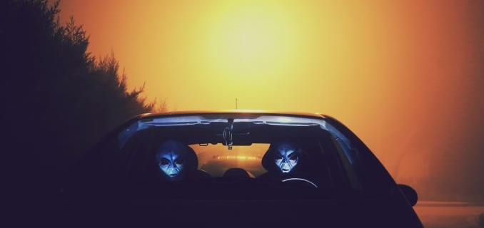

Continuação... Caso varginha

O Caso Varginha se desenrolou em janeiro de 1996 na cidade de Varginha, Minas Gerais, e é considerado um dos eventos ufológicos mais intrigantes do Brasil. O incidente começou com relatos de avistamentos de uma criatura estranha por vários moradores. Descrições da criatura variaram, mas a maioria descreveu-a como alta, com pele marrom, olhos grandes e vermelhos, e possivelmente com um cheiro forte e desagradável.
A mídia local começou a cobrir os avistamentos, e logo o caso ganhou atenção nacional e até internacional. Testemunhas afirmavam ter visto a criatura nas proximidades de um hospital, o que alimentou especulações sobre sua origem e possível conexão com relatos de avistamentos de OVNIs (Objetos Voadores Não Identificados) na região.
Em meio ao frenesi midiático, surgiram relatos de uma suposta perseguição da criatura por militares. Testemunhas afirmaram ter visto militares armados e vestindo trajes de proteção, levando a criatura para um veículo militar. Esses relatos geraram ainda mais especulações e teorias conspiratórias sobre uma possível operação de acobertamento do governo.
Além dos avistamentos da criatura, houve relatos de avistamentos de OVNIs na região na mesma época. Alguns moradores afirmaram ter visto luzes estranhas nos céus de Varginha, o que contribuiu para a aura de mistério que cercava o caso.
As autoridades locais inicialmente negaram qualquer envolvimento no caso, mas mais tarde admitiram ter capturado uma criatura não identificada. No entanto, essa declaração foi rapidamente retractada, e o governo brasileiro nunca confirmou oficialmente a existência de qualquer criatura ou objeto extraterrestre.
O Caso Varginha atraiu a atenção de ufólogos, investigadores paranormais e entusiastas de todo o mundo. Muitas teorias foram propostas para explicar os avistamentos, desde encontros com extraterrestres até experimentos secretos do governo. No entanto, apesar de décadas de especulação e investigação, o mistério em torno do Caso Varginha permanece sem uma explicação definitiva.
Embora não haja evidências concretas que comprovem a existência de extraterrestres ou OVNIs no Caso Varginha, ele continua sendo um dos eventos mais fascinantes e enigmáticos da história da ufologia brasileira.
Esta página foi visitada 0 vezes. Última visita em: